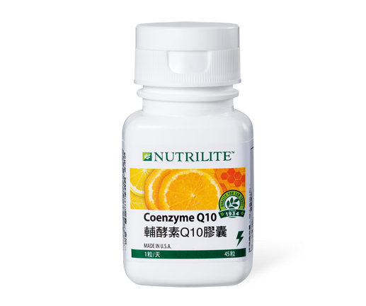

<div class="product_detail_content">
    <div class="picture">
        <div id="owl-demo" class="owl-carousel owl-theme">
            <div class="item"><span class="volume">45粒</span></div>
        </div>
    </div>
    <div class="infomation">
        <h3>輔酵素Q10膠囊<br><span class="small">天然Q10讓身體返回巔峰</span></h3>
        <p>繁忙與壓力，讓你常感嘆活力不若年輕？甚至有力不從心的時刻？輔酵素Q10膠囊以天然發酵方式萃取，添加天然維生素E減少自由基產生，青春自在，揮灑活力！</p>
        <h4>產品特色</h4>
        <ul class="list_dot">
            <li>每粒膠囊含30毫克天然發酵萃取的輔酵素Q10</li>
            <li>以米糠油包附技術提高吸收率</li>
            <li>含14毫克α-TE的天然維生素E，有效維持輔酵素Q10含量</li>
            <li>添加25毫克柑橘生物類黃酮，補充珍貴植物營養</li>
        </ul>
        <!-- <a class="download" href="pdf/products_coenzyme_q10.pdf" target="_blank">營養成分PDF</a> -->
        <div class="btnWrap">
            <div class="showDetail">營養成分</div>
            <a class="download" href="pdf/products_coenzyme_q10.pdf" target="_blank">下載PDF</a>
        </div>
        <div class="detailTable">
            <table class="tableizer-table">
                <thead>
                    <tr class="tableizer-firstrow">
                        <th>重要營養成分</th>
                        <th>每粒含</th>
                    </tr>
                </thead>
                <tbody>
                    <tr>
                        <td>輔酵素 Q10</td>
                        <td>30 毫克</td>
                    </tr>
                    <tr>
                        <td>柑橘生物類黃酮</td>
                        <td>25 毫克</td>
                    </tr>
                    <tr>
                        <td>維生素E </td>
                        <td>14 毫克α-TE (20.9 IU)</td>
                    </tr>
                </tbody>
            </table>
        </div>
    </div>
</div>
